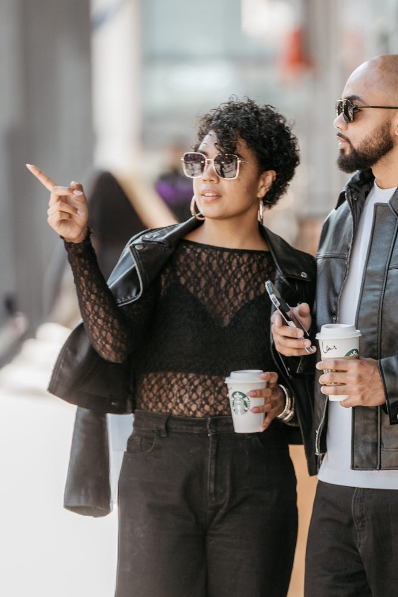

Le marketing
Dylan
Positionnement unique, offre, tunnel de vente.
Résultat plus de ventes.
Pour vendre plus, sans tout porter seul.
Dylan te fait vendre plus. Laura structure ton business pour qu'il tienne.

Une compilation de témoignages de clients. Ali y parle de sa journée signature.
Vidéo bientôt en ligne
Les ventes, les clients, l'admin, les problèmes. Ton business tourne, mais il tourne grâce à toi, et tu n'en peux plus.
Le marketing
Positionnement unique, offre, tunnel de vente.
Résultat plus de ventes.

L'organisation
Laura remet de l'ordre dans tout ce qui se passe derrière tes ventes, pour que ton business tienne sans que tu sois partout.
Résultat un business qui tient sans que tu sois partout.
On travaille avec toi, dans ton business, dans l'opérationnel, pour maximiser tes résultats.
On ne fait pas grandir un business qui fuit. D'abord on répare, ensuite on accélère.
Phase 1
« On sait où tu en es et où on va. »
Les 2 premières semaines
Ce que tu as en main
Ton diagnostic et ton plan d'action écrits.
Phase 2
« On répare ce qui te fait perdre des ventes et du temps. »
Jusqu'à la fin du 3e mois
Ce que tu as en main
Ton tunnel de vente qui tourne, tes process documentés, un tableau de bord simple de tes chiffres.
Phase 3
« On fait grandir ce qui marche. »
À partir du 4e mois
Ce que tu as en main
Une croissance mesurée par rapport à tes chiffres de départ, une équipe qui avance sans que tu portes tout, et une journée signature que tu peux refaire chaque année.
C'est le temps des deux premières phases : l'embarquement et l'optimisation. Le développement se poursuit ensuite, au mois.
On accompagne cinq entreprises à la fois.
Pas plus, parce qu'on travaille vraiment dans ton business.
Une journée pensée pour ton business, qui fait tout en même temps : vendre, fidéliser, mobiliser.
3xson CA habituel d'une journée 45 minlors de sa journée signature
Lors de sa journée signature, Ali a fait 3 fois son chiffre d'affaires habituel d'une journée, en 45 minutes.Écouter Ali
Une fois tes bases en place, on organise avec toi ta journée signature. Un temps fort, à ton nom, qui réunit tes clients, ton équipe et ton offre au même moment.
On ne la fait pas au début. On la fait quand ton offre se vend, que ton tunnel tourne et que ton équipe sait ce qu'elle a à faire. Sinon, on mettrait en avant un business qui n'est pas prêt à recevoir.
Une offre réservée à ce jour-là donne à tes clients une vraie raison d'acheter maintenant.
Ils vivent un moment à part avec ta marque, et ils s'en souviennent.
Tout le monde travaille vers un même objectif, avec une date précise.
Une date, un rendez-vous, une annonce : l'attention monte avant, les ventes suivent le jour J.
Si tu as un lieu physique : une journée dans ta boutique, ton restaurant ou tes locaux. Portes ouvertes, démonstrations, offre du jour.
Si tu vends en ligne : un live de lancement, un événement en visio ou une rencontre avec tes meilleurs clients, avec une offre ouverte seulement ce jour-là.
Le chiffre d'affaires de la journée, le nombre de clients venus, les nouveaux contacts récupérés, et les clients qui reviennent dans les semaines suivantes.
Laura organise la journée : le lieu, le déroulé, l'équipe, la logistique.
Dylan construit l'offre du jour et la communication avant, pendant et après.
Une journée que tu peux refaire chaque année, avec son déroulé écrit.
L'offre réservée à la journée s'arrête vraiment à la fin de la journée.
Vidéo bientôt en ligne
tu n'as pas encore lancé ton activité. Commence par la formation gratuite.
Vendre plus, et plus cher.
Les 5 bases du marketing, appliquées sur ton business. Sur YouTube, 7 semaines, un module par semaine. Gratuit, sans formulaire, sans page de vente.
À chaque étape, tu appliques sur ton business et tu envoies ton travail en DM sur Instagram. Chaque semaine, des cas sont corrigés en live. Une heure offerte à ceux qui ont appliqué et qui restent bloqués, dans la limite de cinq personnes par mois.
4
business lancés, en physique et en ligne
54
entreprises aidées, en physique et en ligne
3x
le chiffre d'affaires habituel d'une journée, en 45 minutes, lors de sa journée signature.
Ali, client accompagné
En 2021, Dylan a travaillé avec un entrepreneur qui fait plusieurs millions. En un mois, il a fait ses premiers 10 000 € net.
Ce n'était pas de la magie : il a vu de l'intérieur que tout reposait sur des bases, toujours les mêmes. La première compétence qu'il a travaillée, c'est la vente. Depuis, il a lancé 4 business et aidé 54 entreprises.
Aujourd'hui, avec Laura, ils mettent ces bases au service de ton business.
Ça dépend de ton besoin. On te donne le prix exact pendant l'appel.
On a aidé 54 entreprises, en physique et en ligne, dans des secteurs différents. L'appel sert justement à voir si on peut t'aider. Si ce n'est pas le cas, on te le dit.
3 mois minimum. C'est le temps qu'il faut pour faire le diagnostic, poser le plan et réparer ce qui te fait perdre des ventes et du temps. Ensuite, on continue au mois si tu veux faire grandir ce qui marche.
Un temps fort qu'on organise avec toi, une fois tes bases en place. Elle fait du chiffre, fidélise tes clients, mobilise ton équipe et profite de la force d'un lancement. Ali, par exemple, a fait 3 fois son chiffre d'affaires habituel d'une journée, en 45 minutes.
Oui. Elle prend la forme d'un live de lancement ou d'un événement en visio, avec une offre ouverte seulement ce jour-là.
Parce qu'on travaille vraiment dans ton business. Au-delà, on ne pourrait pas le faire correctement.
Cinq questions. On accompagne cinq entreprises à la fois : l'appel sert à voir si on peut t'aider.
Merci pour ta candidature.
Dylan et Laura la lisent avec attention.